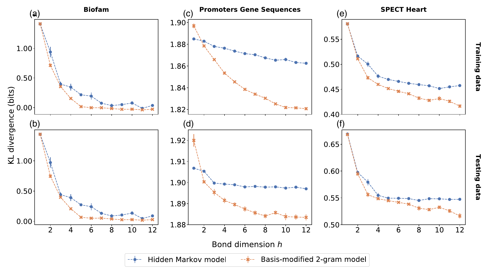
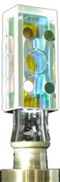
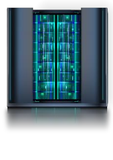
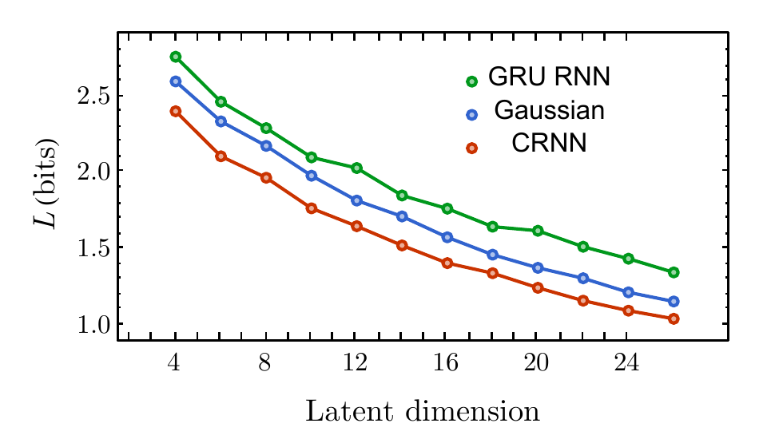

HMM and basis-enhanced model
Biofam, gene sequences, and heart data

MidQWest 2026
Ray Hagimoto
Anzej Margeta-Cacace
What we do
We design, build, and sell quantum computers, precision sensors, and software to governments, corporations, and research institutions
Infleqtion’s
neutral atom
core

Neutral atom
quantum computer

High-performance
processing units
Next-generation
atomic clock
GPS-independent,
ultra-stable timing
Compact
quantum RF receiver
Full-spectrum
signals intelligence
First in Earth’s Orbit
Quantum inertial
sensing
Precision motion
and gravity sensing
Contextual Machine
Learning
Quantum App
Development
The only full-spectrum quantum company
(intended for beginners)
(assumes familiarity with conventional notation for 2-qubit states)
We've looted a bag of trinkets.
| Property | ||
|---|---|---|
| Color X | Orange | Teal |
| Shape Y | Square | Circle |
| Pattern Z | Plain | Striped |
| Numerical value | −1 | +1 |
We have nine measuring devices, each one answers one of the following questions about a pair of trinkets:
Let’s do some measurements
So did Einstein!
$$ \begin{array}{c|c|c||c} \class{proof-slot-0}{X_1} & \class{proof-slot-1}{X_2} & \class{proof-slot-2}{\class{proof-context}{X_1 X_2}} & \class{proof-slot-3}{=+1} \\ \hline \class{proof-slot-4}{Y_2} & \class{proof-slot-5}{Y_1} & \class{proof-slot-6}{\class{proof-context}{Y_1 Y_2}} & \class{proof-slot-7}{=+1} \\ \hline \class{proof-slot-8}{\class{proof-context}{X_1 Y_2}} & \class{proof-slot-9}{\class{proof-context}{Y_1 X_2}} & \class{proof-slot-10}{\class{proof-context}{Z_1 Z_2}} & \class{proof-slot-11}{\class{proof-context}{=+1}} \\ \dhline \class{proof-slot-12}{=+1} & \class{proof-slot-13}{=+1} & \class{proof-slot-14}{\class{proof-context}{=-1}} & \end{array} $$
The highlighted row and column require
$$\begin{aligned} (\class{proof-atom proof-a-X1}{X_1}\class{proof-atom proof-a-Y2}{Y_2})(\class{proof-atom proof-a-Y1}{Y_1}\class{proof-atom proof-a-X2}{X_2})\,\class{proof-atom proof-a-m}{m} &\class{proof-atom proof-a-result}{= +1},\\ (\class{proof-atom proof-b-X1}{X_1}\class{proof-atom proof-b-X2}{X_2})(\class{proof-atom proof-b-Y1}{Y_1}\class{proof-atom proof-b-Y2}{Y_2})\,\class{proof-atom proof-b-m}{m} &\class{proof-atom proof-b-result}{= -1}. \end{aligned}$$
Reordering these fixed scalar values gives
$$\begin{cases} (\class{proof-atom proof-a-X1}{X_1}\class{proof-atom proof-a-Y1}{Y_1}\class{proof-atom proof-a-X2}{X_2}\class{proof-atom proof-a-Y2}{Y_2})\,\class{proof-atom proof-a-m}{m} \class{proof-atom proof-a-result}{= +1},\\ (\class{proof-atom proof-b-X1}{X_1}\class{proof-atom proof-b-Y1}{Y_1}\class{proof-atom proof-b-X2}{X_2}\class{proof-atom proof-b-Y2}{Y_2})\,\class{proof-atom proof-b-m}{m} \class{proof-atom proof-b-result}{= -1}. \end{cases}$$
$$ \begin{array}{c|c|c||c} \class{proof-slot-0}{X_1} & \class{proof-slot-1}{X_2} & \class{proof-slot-2}{\class{proof-context}{X_1 X_2}} & \class{proof-slot-3}{=+1} \\ \hline \class{proof-slot-4}{Y_2} & \class{proof-slot-5}{Y_1} & \class{proof-slot-6}{\class{proof-context}{Y_1 Y_2}} & \class{proof-slot-7}{=+1} \\ \hline \class{proof-slot-8}{\class{proof-context}{X_1 Y_2}} & \class{proof-slot-9}{\class{proof-context}{Y_1 X_2}} & \class{proof-slot-10}{\class{proof-context}{Z_1 Z_2}} & \class{proof-slot-11}{\class{proof-context}{=+1}} \\ \dhline \class{proof-slot-12}{=+1} & \class{proof-slot-13}{=+1} & \class{proof-slot-14}{\class{proof-context}{=-1}} & \end{array} $$
$$ \begin{array}{c|c|c||c} \class{proof-slot-0}{X_1} & \class{proof-slot-1}{X_2} & \class{proof-slot-2}{\class{proof-context}{X_1 X_2}} & \class{proof-slot-3}{=+1} \\ \hline \class{proof-slot-4}{Y_2} & \class{proof-slot-5}{Y_1} & \class{proof-slot-6}{\class{proof-context}{Y_1 Y_2}} & \class{proof-slot-7}{=+1} \\ \hline \class{proof-slot-8}{\class{proof-context}{X_1 Y_2}} & \class{proof-slot-9}{\class{proof-context}{Y_1 X_2}} & \class{proof-slot-10}{\class{proof-context}{Z_1 Z_2}} & \class{proof-slot-11}{\class{proof-context}{=+1}} \\ \dhline \class{proof-slot-12}{=+1} & \class{proof-slot-13}{=+1} & \class{proof-slot-14}{\class{proof-context}{=-1}} & \end{array} $$
$$ \begin{array}{c|c|c||c} \class{proof-slot-0}{1} & \class{proof-slot-1}{1} & \class{proof-slot-2}{\class{proof-third-column}{1}} & \class{proof-slot-3}{=+1} \\ \hline \class{proof-slot-4}{1} & \class{proof-slot-5}{1} & \class{proof-slot-6}{\class{proof-third-column}{1}} & \class{proof-slot-7}{=+1} \\ \hline \class{proof-slot-8}{\class{proof-third-row}{1}} & \class{proof-slot-9}{\class{proof-third-row}{1}} & \class{proof-slot-10}{\class{proof-third-row proof-third-column}{1}} & \class{proof-slot-11}{\class{proof-satisfied}{=+1}} \\ \dhline \class{proof-slot-12}{=+1} & \class{proof-slot-13}{=+1} & \class{proof-slot-14}{\class{proof-unsatisfied}{\cancel{=-1}}} & \end{array} $$
$$ \begin{array}{c|c|c||c} \class{proof-slot-0}{1} & \class{proof-slot-1}{1} & \class{proof-slot-2}{\class{proof-third-column}{1}} & \class{proof-slot-3}{=+1} \\ \hline \class{proof-slot-4}{1} & \class{proof-slot-5}{1} & \class{proof-slot-6}{\class{proof-third-column}{1}} & \class{proof-slot-7}{=+1} \\ \hline \class{proof-slot-8}{\class{proof-third-row}{1}} & \class{proof-slot-9}{\class{proof-third-row}{1}} & \class{proof-slot-10}{\class{proof-third-row proof-third-column}{-1}} & \class{proof-slot-11}{\class{proof-unsatisfied}{\cancel{=+1}}} \\ \dhline \class{proof-slot-12}{=+1} & \class{proof-slot-13}{=+1} & \class{proof-slot-14}{\class{proof-satisfied}{=-1}} & \end{array} $$
\(Z_1Z_2=+1\) when we measure it with \(X_1Y_2\) and \(Y_1X_2\).
\(Z_1Z_2=-1\) when we measure it with \(X_1X_2\) and \(Y_1Y_2\).
In some sense, the “correct” way to do this classically would be to e.g. assign the value \(1\) to \(Z_1Z_2\) when measuring it with \(X_1Y_2\) and \(Y_1X_2\), then assign it \(-1\) when measuring it with \(X_1X_2\) and \(Y_1Y_2\). This is why this phenomenon is called contextuality—the measurement result of a given observable depends on other observables that were previously measured.
Let's conjecture that these "contextual" correlations could be useful at representing contextual relationships in classical data.
If this is true, is there any advantage to simulating magic square statistics with a quantum computer?
Clearly, a quantum computer can simulate these statistics with 2 qubits.
How many classical bits would it take?
| Contextual history | Correct answer |
|---|---|
1.I bought a phone yesterday.
|
computer or printer |
2.I bought a computer yesterday.
|
phone or printer |
3.I bought a printer yesterday.
|
phone or computer |
Example internal state
Classical \(\psi_1 = 101\)
Quantum \(\ket{\psi_1} = \ket{++}\)
Only requirement: no impossible measurement outcomes
$$ \begin{array}{c|c|c||c} \rule{0pt}{1.4em}\class{proof-slot-0}{X_1} & \class{proof-slot-1}{X_2} & \class{proof-slot-2}{\hphantom{\;}\class{proof-context}{X_1 X_2}\hphantom{\;}} & \class{proof-slot-3}{=+1} \\ \hline \rule{0pt}{1.4em}\class{proof-slot-4}{Y_2} & \class{proof-slot-5}{Y_1} & \class{proof-slot-6}{\hphantom{\;}\class{proof-context}{Y_1 Y_2}\hphantom{\;}} & \class{proof-slot-7}{=+1} \\ \hline \rule{0pt}{1.4em}\class{proof-slot-8}{\class{proof-context}{X_1 Y_2}} & \class{proof-slot-9}{\class{proof-context}{Y_1 X_2}} & \class{proof-slot-10}{\class{proof-context}{Z_1 Z_2}} & \class{proof-slot-11}{\class{proof-context}{=+1}} \\ \dhline \class{proof-slot-12}{=+1} & \class{proof-slot-13}{=+1} & \class{proof-slot-14}{\class{proof-context}{=-1}} & \end{array} $$
Classical encoding (internal states)
Only requirement: no impossible measurement outcomes
$$ \begin{array}{c|c|c||c} \rule{0pt}{1.4em}\class{proof-slot-0}{X_1} & \class{proof-slot-1}{X_2} & \class{proof-slot-2}{\hphantom{\;}\class{proof-context}{X_1 X_2}\hphantom{\;}} & \class{proof-slot-3}{=+1} \\ \hline \rule{0pt}{1.4em}\class{proof-slot-4}{Y_2} & \class{proof-slot-5}{Y_1} & \class{proof-slot-6}{\hphantom{\;}\class{proof-context}{Y_1 Y_2}\hphantom{\;}} & \class{proof-slot-7}{=+1} \\ \hline \rule{0pt}{1.4em}\class{proof-slot-8}{\class{proof-context}{X_1 Y_2}} & \class{proof-slot-9}{\class{proof-context}{Y_1 X_2}} & \class{proof-slot-10}{\class{proof-context}{Z_1 Z_2}} & \class{proof-slot-11}{\class{proof-context}{=+1}} \\ \dhline \class{proof-slot-12}{=+1} & \class{proof-slot-13}{=+1} & \class{proof-slot-14}{\class{proof-context}{=-1}} & \end{array} $$
Classical encoding (internal states)
Biofam, gene sequences, and heart data

Spanish-to-English translation
